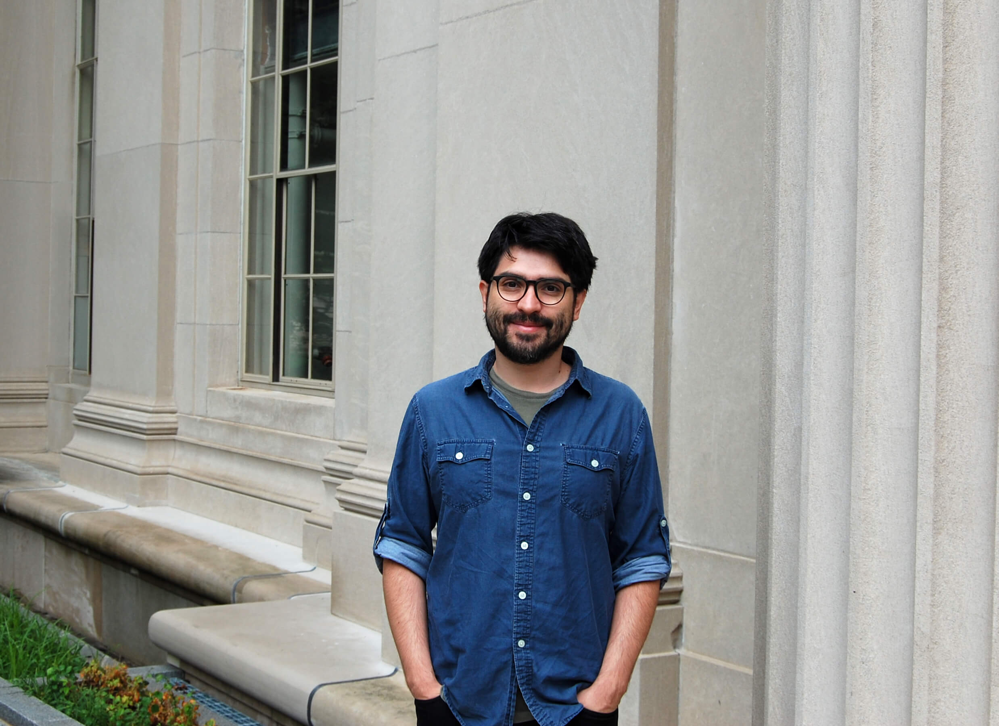

Hello and welcome! I am an Associate Professor (UHD-2) in the Mathematics
of Computational Science (MACS) group within the Department of Applied Mathematics at the University of Twente.
My research lies in the intersection of wave phenomena, scientific computing, integral equations, high-order PDE solvers, and numerical analysis. More detailed information about my research is available here or in my CV
Before joining UTwente, I was with the Institute for Mathematical and Computational Engineering at Pontificia Universidad Católica de Chile (PUC).
Prior to that, I spent two years as an Instructor in Applied Mathematics at the Massachusetts Institute of Technology (MIT) - Department of Mathematics.
At MIT, I taught various courses, including the graduate course Fast Methods for Partial Differential and Integral Equations (18.336).
I hold a Ph.D. in Applied and Computational Mathematics from the California Institute of Technology (Caltech), awarded in 2016. Prior to that,
I obtained a master's degree and a bachelor's degree in Mathematical Engineering from PUC, supported by the Premio Padre Hurtado and CONICYT, respectively.
Carlos Pérez Arancibia
 Department of Applied Mathematics,
University of Twente, The Netherlands
Department of Applied Mathematics,
University of Twente, The Netherlands